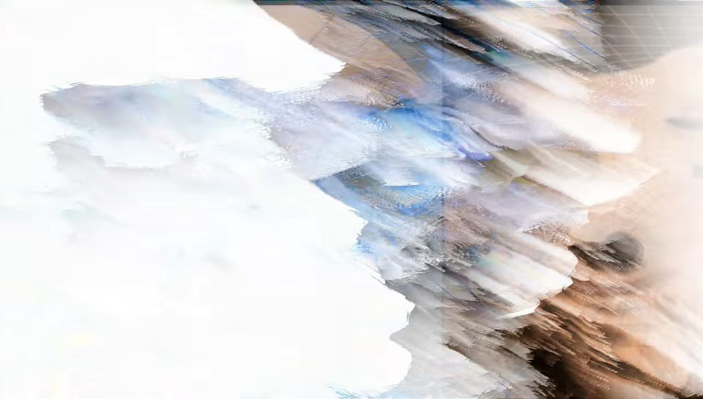

Audiovisual storyАудиовизуальная история
ad(do)Or_e(a)Rrorad(do)Or_e(a)Rror
Selected for the special project of PS-2025: Stories in A/V. The story of the most adorable oak-like error in the network.Отобран в спец-проект ПС-2025 «Все прекрасные аудиовизуальные истории». История самой обаятельной дубоподобной ошибки в сети.

The story of the most adorable oak-like error in the network. ad(do)Or_e(a)Rror explores a space of digital instability — a state in which an error becomes a structural, autonomous element, alive, yet its identity loses stability under the pressure of networked representations.
История самой обаятельной дубоподобной ошибки в сети. ad(do)Or_e(a)Rror исследует пространство цифровой нестабильности — состояние, в котором ошибка становится структурным, автономным элементом, живым, но её идентичность теряет устойчивость под давлением сетевых репрезентаций.
The project combines field recordings, AI “breaths” and whispers, and objects synthesised in the MAX/MSP environment, creating a multilayered field where rupture, displacement and interruption function as new forms of meaning-making.
Проект соединяет полевые записи, ИИ-«дыхания» и шёпоты, а также синтезированные объекты в среде MAX/MSP, создавая многослойное поле, где разрыв, смещение и прерывание работают как новые формы смыслообразования.
ImagesИзображения